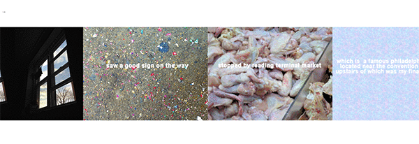
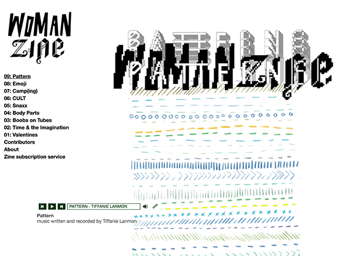

comparative research: fungiculture and womazine
Fungiculture Journal: A Psychedelic Journal for Cultural Studies is a webzine created by a collaboration of writers and artists. It is simply designed, with a retro, Deadjournal-like sparkling cursor. As indicated by its title, the zine’s mission is to be "comfortable being laboratory, greenhouse; the emphasis falls on seeing what can grow, and caring for it.” It serves as both a journal and a curation of digital art projects. Its content includes poetry, essays, graphics, accompanying experimental music, videos, and gifs. One issue that I find particularly interesting displays a series of horizontally scrolling animated gifs that present themselves as a kind of stop-motion movie slideshow (pictured below), showcasing the Philadelphia Flower Show. I love the projects incorporated on this site, for they are extremely experimental and abstract, with short artist statements that leave much room up to the viewer for interpretation. The issues also make use of media that is distinctly digital, and could not be captured in the traditional xeroxed zine format.
Image source: fufufo.com
Womanzine takes a format that is more along the lines of what I would be interested in creating for my own project. While they have less of a specific mission statement (“WOMANZINE is about/for/not for women. WOMANZINE is too sexy and weird.”) it appears to capture a feminist worldview. This zine has nine issues, and similarly to Fungiculture, takes advantage of nontraditional website formatting, causing the viewer to explore the page in a less predetermined way. Its content also includes poetry, essays, gifts, msuic, and other digital artwork that revolve around set themes, which influence “Body Parts” and “Emoji”. I enjoy the way in which this zine is, in the spirit of much of the internet, self-referential. This zine has dozens of contributors, who are credited below each piece within the issues, and all the content appears original or at least collaged or modified in some way. The overall look for Womanzine, as well as for Fungiculture, is minimalistic, and more or less does not overwhelm the viewer, which is something that I might try to play with in my own work, especially with the unique interaction tools for which Javascript allows.
Image source: toosexyandweird.com